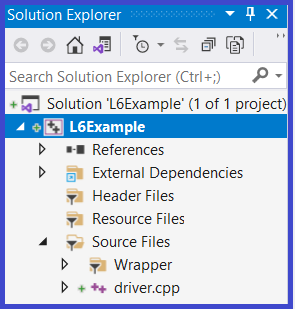

|
 |
The primary objective of this lab is to provide you experience with:
Steps:
template <class T, class StackOfT>
void FlipCapability1<T, StackOfT>::flip ()
//! updates self
//! ensures: self = rev(#self)
{
// your implementation here
// you must use a while loop
// annotate your while loop with:
// updates, maintains, decreasing
} // flip |
Important Restrictions:
The Grader's test cases:
Grading will be done Unit tests on your FlipCapability1.hpp file